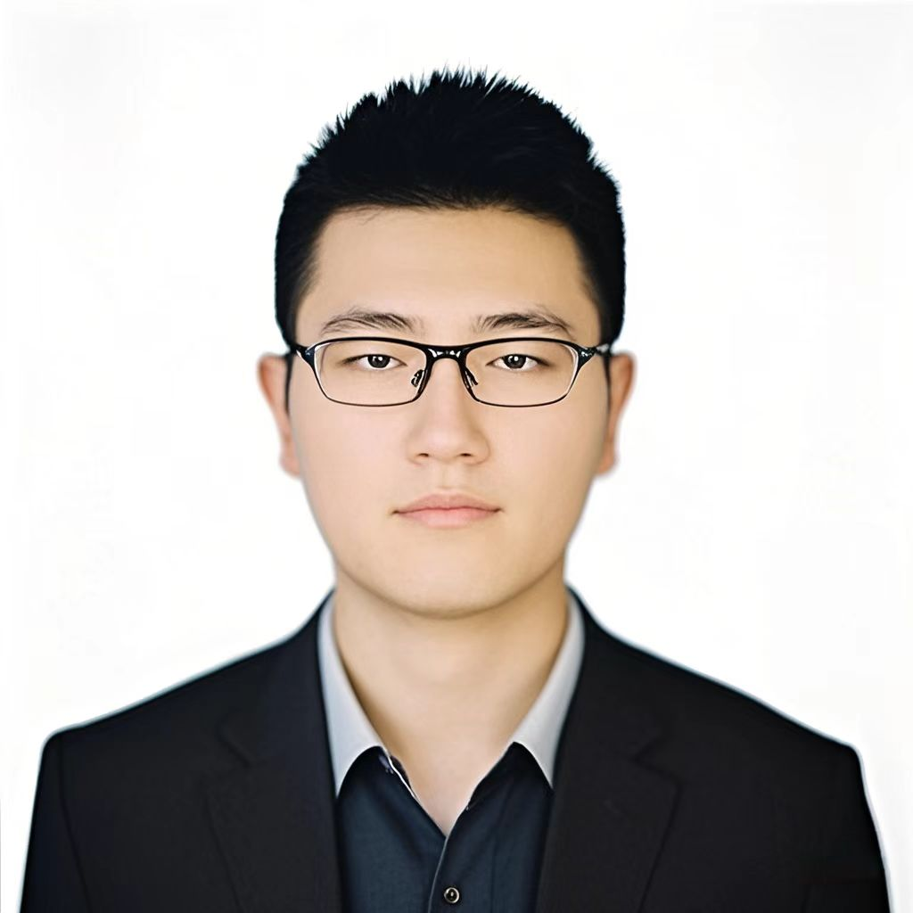

Team
Principal Investigator

Prof. Dr. Shuaibing Zhang
Group Leader
School of Traditional Chinese Pharmacy, China Pharmaceutical University
Email: shuaibing.zhang@cpu.edu.cn
Postdoctoral Researchers

Haixin Diao (刁海欣)
Postdoc
Research topic: Chemical ecology of medicinal plant-associated microorganisms
Email: dhxtx1216@163.com
Dr. Diao received her Bachelor of Science degree in Landscape Architecture from Fujian Agriculture and Forestry University (2012–2016). She then completed her Master of Science degree in Ecology from Shanghai Institute of Technology (2017–2020) and completed joint training at Shanghai Chenshan Botanical Garden, Chinese Academy of Sciences (2018–2020). During her master's studies, she investigated the effects of soil factors on the fungal community structure of Bletilla striata roots. From 2021 to 2025, she pursued her Ph.D. in Pharmacognosy at the Institute of Medicinal Plant Development, Chinese Academy of Medical Sciences & Peking Union Medical College, under the supervision of Prof. Shunxing Guo. Her doctoral research focused on endophytic fungal biology and mycorrhizal symbiosis of Gastrodia elata f. glauca. She has accumulated extensive experience in large-scale isolation and screening of symbiotic fungi, establishment of aseptic co-culture systems, and field validation experiments. Since July 2026, she has been a postdoctoral researcher in the research group of Prof. Dr. Shuaibing Zhang at the School of Traditional Chinese Pharmacy, China Pharmaceutical University. Her current research focuses on microbe interaction-driven natural product discovery and chemical ecology. To date, she has published two first-author papers in SCI journals including Frontiers in Plant Science and Plants, and two first-author papers in Chinese core journals. She has also participated in formulating two group standards and holds one authorized invention patent.
PhD Students

Qi Cheng (程琪)
PhD Student
Research topic: Chemical communication in plant-associated microorganisms
Email: 1364313580@qq.com
Cheng Qi received his Bachelor in Pharmacy from Kunming University (2019-2023), where he was mentored by Prof. Jiangbo He and won the National Innovation Achievement Second Prize at the 13th National Pharmacy Forum Competition. He completed his Master at the South China Sea Institute of Oceanology, Chinese Academy of Sciences, under Prof. Shuhua Qi (2023-2026), focusing on secondary metabolites from marine-derived fungi and gaining solid training in fermentation, isolation, and structural elucidation. Since 2026, he has been pursuing his Ph.D. at China Pharmaceutical University, investigating the molecular mechanisms of microbial interactions to discover bioactive molecules with pharmaceutical potential. With a strong foundation in natural product chemistry and interdisciplinary vision, he aims to make meaningful contributions to microbial chemical ecology.
Master Students

Feiwang Wu (吴飞往)
Master Student
Research topic: Bioactive metabolites from medicinal plant-associated microorganisms
Email: 2056387453@qq.com
Feiwang Wu obtained his Bachelor of Pharmacy degree from Jinggangshan University (2022–2026), where he received systematic training in natural product isolation, structural elucidation and bioactivity evaluation. Starting from September 2026, he will join Prof. Zhang’s laboratory to pursue his master’s studies at China Pharmaceutical University. His research focuses on bioactive metabolites derived from plant-associated microorganisms, aiming to identify compounds with pharmaceutical potential. Equipped with a solid background in natural product chemistry, he seeks to unravel the chemical communication underlying plant–microbe interactions.
Bachelor Students and Research Assistants

Lijia Mu (牟立佳)
Bachelor Student
Research topic: Microbial interaction chemistry
Email: 849044253@qq.com
Lijia Mu is an undergraduate student majoring in Biopharmacy at the Meng Mudi Honors College, China Pharmaceutical University. Since 2026, she has undertaken research training in the research group of Prof. Shuaibing Zhang.

Zihang Su (苏子航)
Bachelor Student
Research topic: Microbial interaction chemistry
Email: 2939548124@qq.com
Zihang is currently pursuing his Bachelor’s degree at China Pharmaceutical University. He was admitted to the School of Engineering in September 2025. Since September 2026, he has been engaged in academic studies and scientific research training under the supervision of Prof. Dr. Shuaibing Zhang.

Yu Yang (杨玉)
Bachelor Student
Research topic: Microbial interaction chemistry
Email: 2169793202@qq.com
Yang Yu is an undergraduate student majoring in Chinese Medicinal Resources and Development at the School of Traditional Chinese Pharmacy, China Pharmaceutical University. He has participated in a National College Student Innovation and Entrepreneurship Training Program and four university-level research projects, gaining experience in synthetic biology, natural product isolation, pharmacological assays, and experimental techniques including PCR, protein purification, TLC, and HPLC. His current research interests focus on the biosynthesis and biological functions of natural products from medicinal plants and microorganisms.